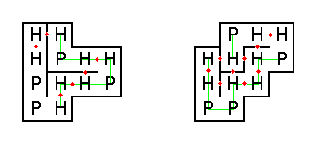

In a very simplified form, we can consider proteins as strings consisting of hydrophobic (H) and polar (P) elements, e.g. HHPPHHHPHHPH.
For this problem, the orientation of a protein is important; e.g. HPP is considered distinct from PPH. Thus, there are $2^n$ distinct proteins consisting of $n$ elements.
When one encounters these strings in nature, they are always folded in such a way that the number of H-H contact points is as large as possible, since this is energetically advantageous.
As a result, the H-elements tend to accumulate in the inner part, with the P-elements on the outside.
Natural proteins are folded in three dimensions of course, but we will only consider protein folding in
two dimensions
.
The figure below shows two possible ways that our example protein could be folded (H-H contact points are shown with red dots).

The folding on the left has only six H-H contact points, thus it would never occur naturally.
On the other hand, the folding on the right has nine H-H contact points, which is optimal for this string.
Assuming that H and P elements are equally likely to occur in any position along the string, the average number of H-H contact points in an optimal folding of a random protein string of length $8$ turns out to be $850 / 2^8 = 3.3203125$.
What is the average number of H-H contact points in an optimal folding of a random protein string of length $15$?
Give your answer using as many decimal places as necessary for an exact result.
dev: solve(n=8) → █
main: solve(n=15) → █
extra: solve(n=16) → █
Solution pending... the mathematician is still thinking.
Nothing here yet - come back when the dust has settled.